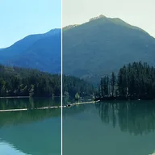

Split-Toning

Tönt die Schatten in einen Farbton und die Lichter in einen anderen, wobei Schwarz, Weiß und Helligkeit erhalten bleiben. Schattenpegel verbiegt die Helligkeitskurve, und Lichterpegel verschiebt, wo die Lichterfarbe beginnt. Der Stil „Verlaufsumsetzung“ gibt jedem Pixel allein anhand seiner Helligkeit eine Farbe.
Einstellungen
| Einstellung | Typ | Bereich | Standard |
|---|---|---|---|
| Schattenfarbton | Winkel | -360° bis 360° | 200° |
| Schattenstärke | Zahl | 0 bis 1 | 0.6 |
| Lichterfarbton | Winkel | -360° bis 360° | 35° |
| Lichterstärke | Zahl | 0 bis 1 | 0.6 |
| Schattenpegel | Zahl | -0.9 bis 1 | 0 |
| Lichterpegel | Zahl | -1 bis 0.9 | 0 |
| Stil | Auswahl | Tönung, Verlaufsumsetzung | Tönung |